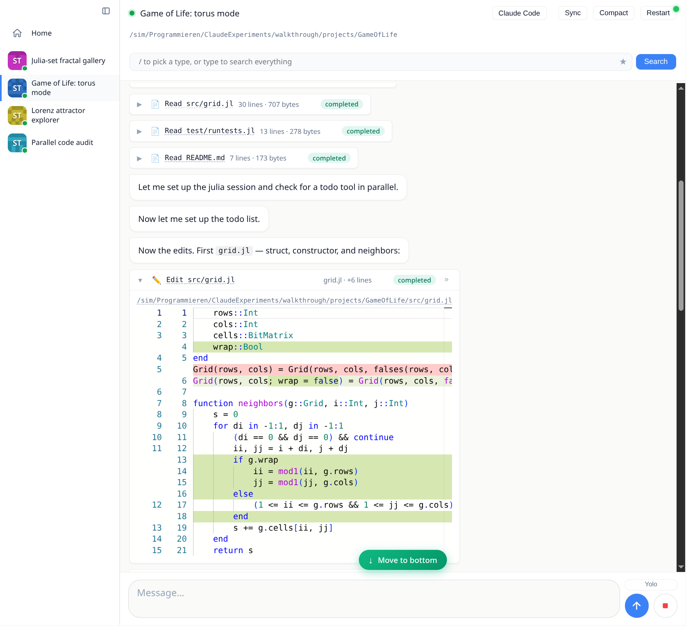
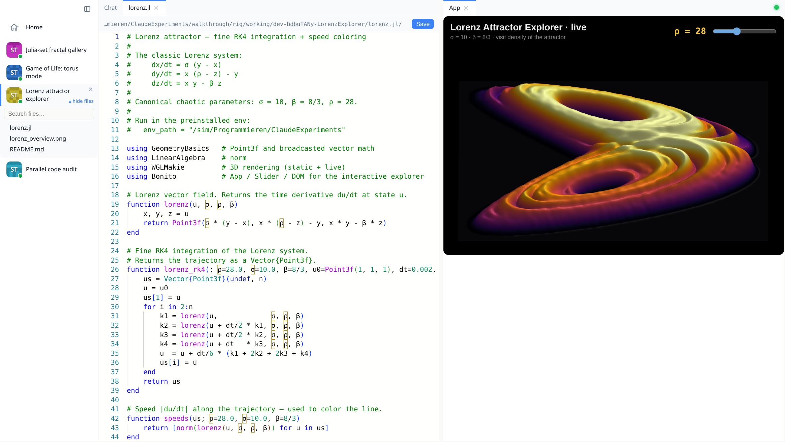

The Chat#

The transcript#
Agent turns stream live. The transcript is a virtualized scroller, so month-long conversations stay smooth: only the visible window is in the DOM, history backfills lazily in the background, and your reading position is anchored to content, so it survives tab switches, reconnects, and messages growing above the viewport.
Prose renders as CommonMark with syntax-highlighted code blocks. Code blocks and images grow hover buttons for copy and download; images open in a lightbox on click.
Tool calls appear as one-line pills (icon, title, status) that expand in place: file edits into a Monaco diff viewer, shell commands into scrollable terminal output, searches into match lists.
Julia evals (
bt_julia_eval) stream their stdout into a live terminal pane while they run, then settle into Code and Output sections that each collapse three ways (full → a scrollable ~4-line summary → hidden). The return value renders below as a live result, an interactive app included (see Julia Tools & Live Apps).Questions (ACP elicitations) render as forms you answer inline.
Plans and todo lists the agent maintains are pinned to the taskbar while the turn runs.
Subagents (for example Claude Code's Task tool) get their own activity feed inside the parent pill, including output that arrives between turns from background subagents.
While a turn streams, the view follows the newest message; scroll up and it stops following, with a "move to bottom" control and an unread indicator until you return. Sending is never blocked: messages typed during an agent restart or reconnect are queued rather than dropped.
Files and the editor#
Every file path in the transcript is a link, and the sidebar has a lazy, searchable project file tree (hover a chat, then "▾ files"). Opening a file fetches it fresh from the worker, so the editor always shows what is on disk now, and puts it in a Monaco editor panel that saves back to the worker (Ctrl+S). Re-activating an already-open file re-checks the worker and live-updates a clean buffer; your unsaved edits are never overwritten.
The workspace#
The main area is a VSCode-style workspace (BonitoWidgets). The chat, file editors and detached app embeds are panels you drag into tab groups, split horizontally or vertically, float as windows, and dock back. Collapse the sidebar (Ctrl/⌘+B) for a full-bleed view. The layout is responsive: on a phone the sidebar folds to icons and panels stack, so the same dashboard drives a chat from your desk or your pocket.

Media and live apps#
Agents push results into the chat through the built-in Julia tools (Julia Tools & Live Apps). bt_show renders a worker-side file: images and videos inline with a lightbox, text as syntax-highlighted code. And whatever bt_julia_eval returns renders as a live value: a plot, a table, or a running Bonito app whose logic executes in the worker's Julia session, so a slider drag or button click round trips to real code. Live embeds detach from their bubble into a workspace tab or floating window and stay alive there: the same DOM node is moved, so their WebGL context and session are kept rather than rebuilt.
Staying in control#
Stop interrupts the current turn; a hung agent escalates (cancel, then force-close) so stop always works.
Yolo mode (composer toggle) auto-continues an agent that pauses to ask "shall I keep going?". The reminder it injects also tells the agent how to bail out deliberately.
Compact asks the agent to summarize the conversation so far into a fresh context, after which the transcript reconciles cleanly.
Background tasks (long test runs, builds) stay pinned to the taskbar with live line counts and a per-task stop button, monitored across turns until their writer exits.
The search lens (
/box above the transcript) filters the transcript by type or fuzzy text, and saved lenses come back on a click.
On this page